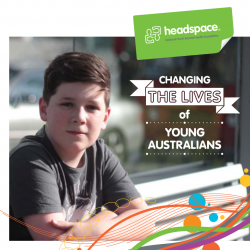
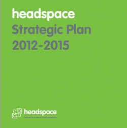
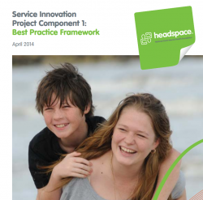
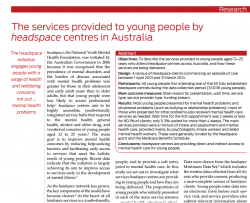

Downloadable publications


headspace Strategic Plan 2012-2015
Service Innovation Project Component 2: Social Inclusion Model Development Study

Service Innovation Project Component 1: Best Practice Framework

Medical Journal of Australia - 'The services provided to young people through the headspace centers across Australia'
Submission: The National Conversation - a National Strategy for Young Australians
Establishment Report: 07
headspace Evaluation Report
Empowering young people: headspace Strategic Plan 2010-2012
Research
- headspace: Australia's National Youth Mental Health Foundation - where young minds come first - Medical Journal of Australia.
Read this article to learn more about why headspace was created, the headspace initiative and how it aimed to improve access and health and social outcomes for young people.
- Innovation in youth mental health services in Australia: Common characteristics across the first headspace centers - Early Intervention in Psychiatry.
This paper examines the service activity of the first headspace centers to determine common and unique practice characteristics across headspace centers in this new approach to mental health service delivery.
- Designing youth mental health services for the 21st century: Examples from Australia, Ireland and the UK - British Journal of Psychiatry.
This paper represents three rapidly evolving service structures from Australia, Ireland and the UK that have each worked within their respective healthcare contexts to reorient existing services to provide youth-specific, evidence-based mental healthcare that is both accessible and acceptable to young people.
- Cultures for mental health care of young people: an Australian blueprint for reform - Lancet Psychiatry
This article outlines the case for a specific youth mental health stream and describes the innovative service reforms in youth mental health in Australia, using them as an example of the processes that can guide the development and implementation of such a service stream.
- Service Innovation Project Component 1: Best Practice Framework. - headspace National Youth Mental Health Foundation.
The Best Practice Framework aims to identify, develop and trial innovative approaches to ensure that headspace centers are informed by the best current evidence and resources that support improving the quality and effectiveness of services to young people.
- headspace―Australia’s innovation in youth mental health: Who’s coming and why do they present? - Medical Journal of Australia.
This article provides the first national profile of the characteristics of young people (aged 12–25 years) accessing headspace center services and investigates whether headspace is providing early service access for adolescents and young adults with emerging mental health problems.
- Letter: headspace―Australia’s innovation in youth mental health: Who’s coming and why do they present?Medical Journal of Australia.
This letter is a response to a request for clarification about engagement in education, employment and training from the previous article headspace — Australia's innovation in youth mental health: who are the clients and why are they presenting?
- The services provided to young people by headspace centers in Australia. Medical Journal of Australia
This article describes the services provided to young people aged 12–25 years who attend headspace centers across Australia, and how these services are being delivered.
- Changes in psychological distress and psychosocial functioning for young people accessing headspace centers for mental health problems. - Medical Journal of Australia.
This article examines changes in psychological distress and psychosocial functioning in young people presenting to headspace centers across Australia for mental health problems.
This study aimed to determine the psychometric properties of the headspace youth (mental health) service satisfaction scale (YSSS), a 14-item purpose-designed scale for use with adolescents and young adults attending headspace centers, and to examine the level of satisfaction with headspace center services and the client characteristics that predict this.
- Social influences on seeking help from mental health services, in-person and online, during adolescence and young adulthood -BMC Psychiatry.
This study provides the first comprehensive empirical evidence of developmental changes in the social influences on seeking mental health care, both in-person and online, during the critical lifestages for mental health of adolescence and young adulthood.